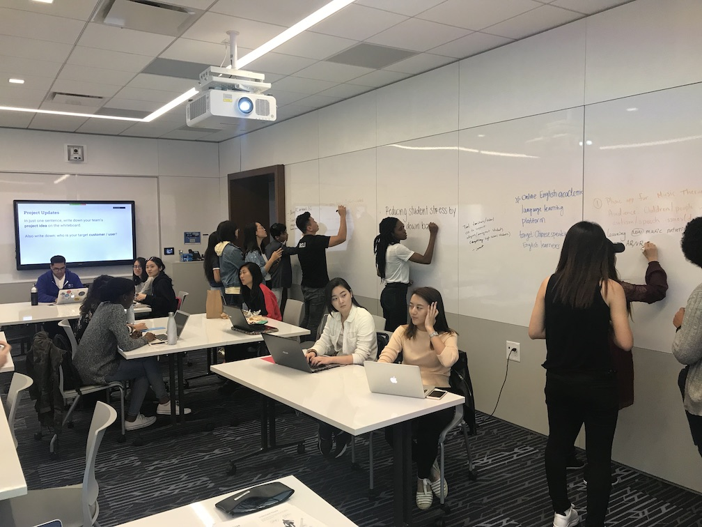
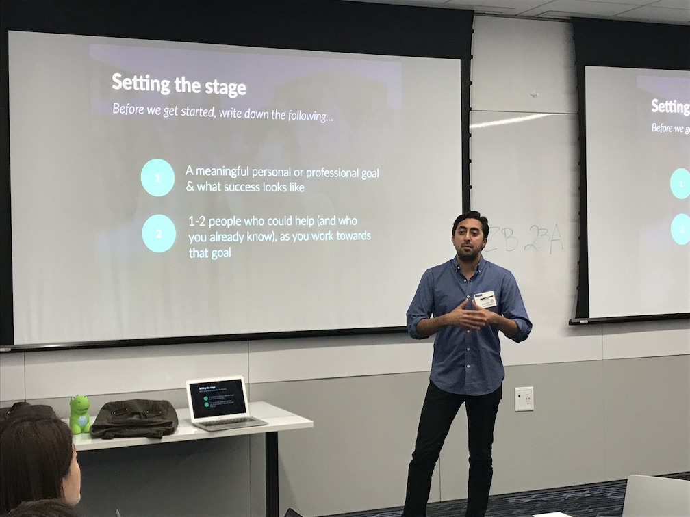
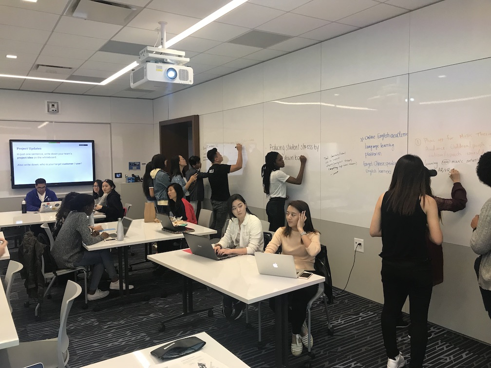
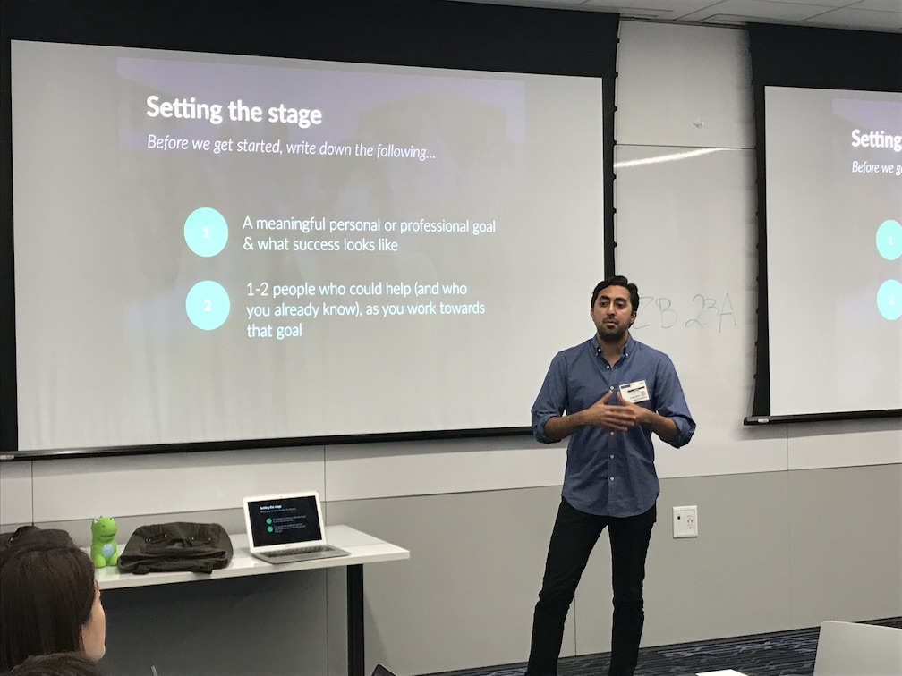
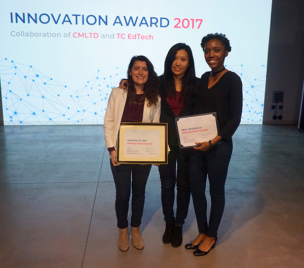
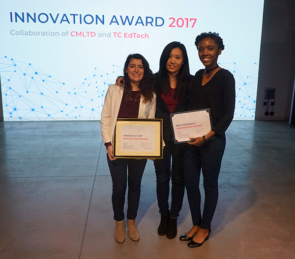
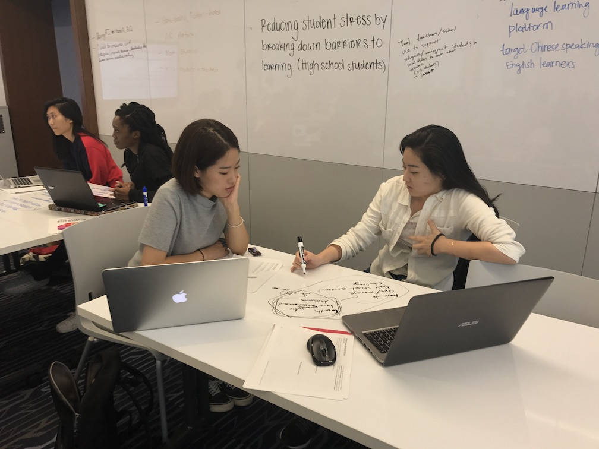
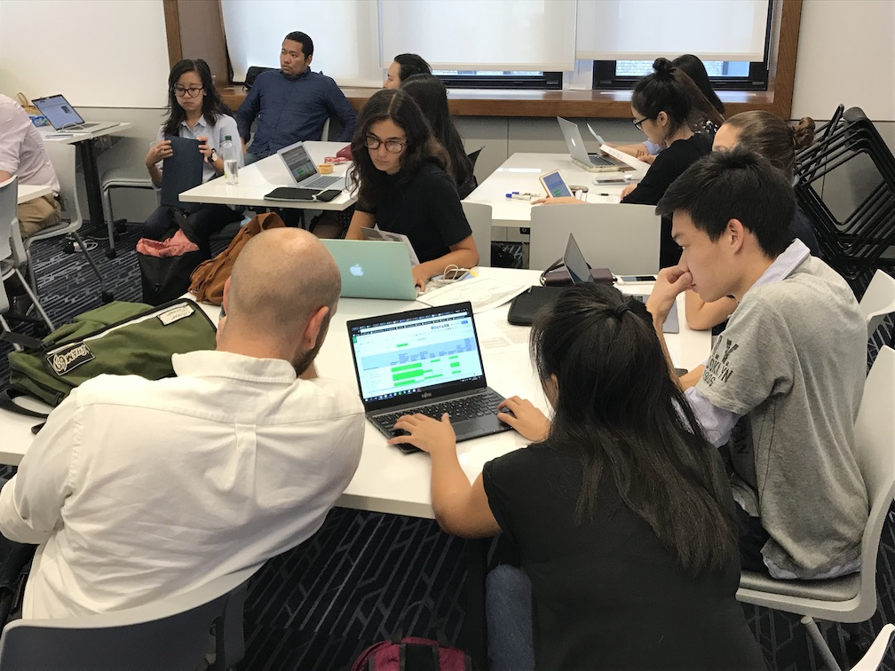
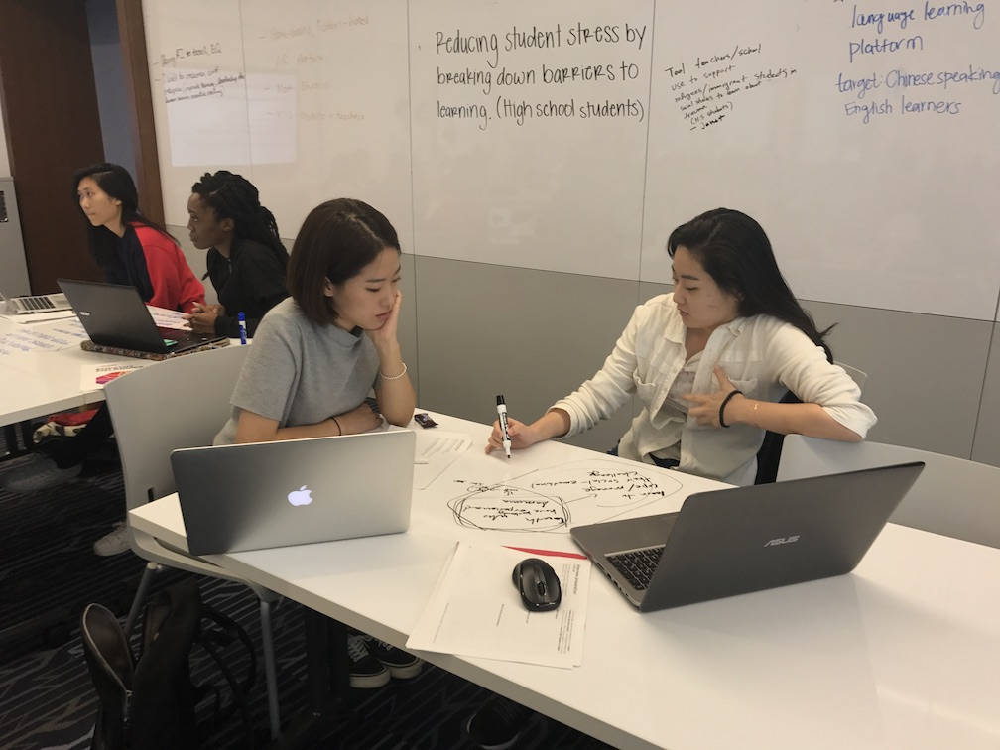
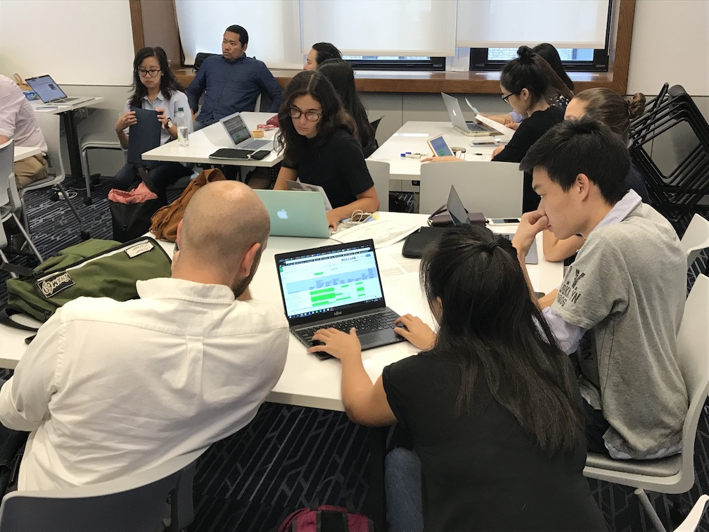

Problem & Challenge
Diversity in STEAM
Skills and interest in science, technology, engineering, arts and mathematics (STEAM) subjects are urgently needed for tomorrow’s workforce -- yet women and other minorities are significantly underrepresented in STEAM fields. Black and Hispanic professionals, for instance, represent only 9% and 7% of STEAM workforce, respectively (Pew, 2018). Even worse, women and minorities appear to lose interest in STEAM subjects as they reach adolescence; for instance, less than 30% of science and technology researchers are women (UNESCO), while the percentage of women who graduate with a computer science degree dropped from 37% in 1985 to 14% nationwide (ComputerScience.org, 2019). The problem calls for innovative and research-based EdTech solution.
There is a need to design technology-based solutions that are culturally sensitive, debunking stereotypes and myths that women and minorities do not like STEAM. Further, research has shown that play and culturally relevant pedagogy can be effective in promoting interest, learning, and new identities in STEAM fields.
Challenge
TC EdTech INA 2019 calls for proposal to solve the problem of lack of diversity in STEAM fields, by designing innovative Educational Technology integrating culturally relevant play pedagogy.
- Culturally Relevant Play Pedagogy
Play is the oldest form of learning and has benefits for all types of learning and learners. We believe play can be used as an effective framework to support all learners enter and thrive in STEAM fields. However, play has not been sufficiently and effectively integrated to support learning in consideration of different ways people play and learn. - Innovative Educational Technology
Innovation is defined as a research-based creative solution to address an authentic problem.
Ready to join? Team, idea, developed work?
Sign Up Now 



 


 


